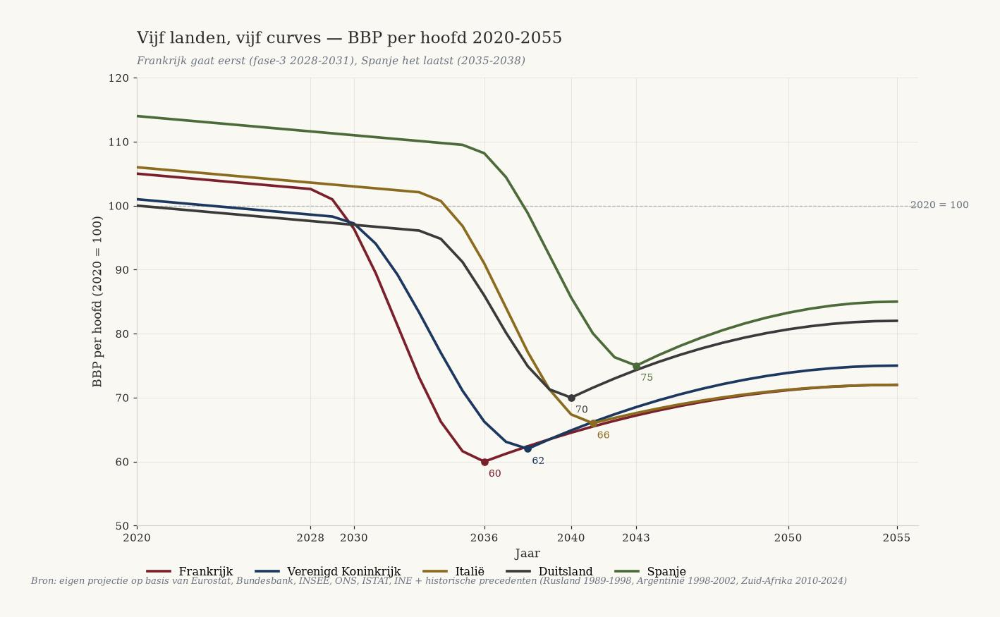
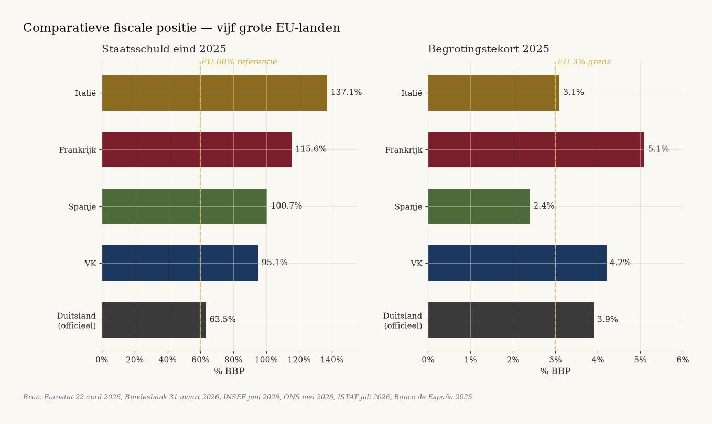
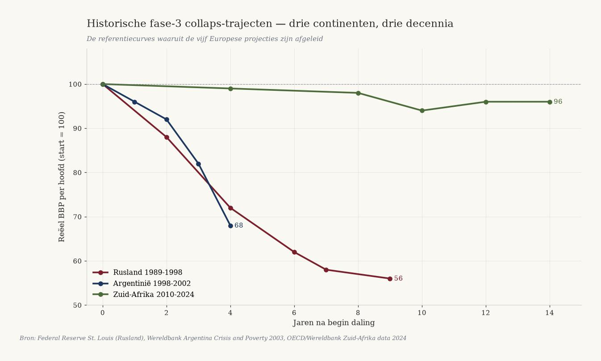
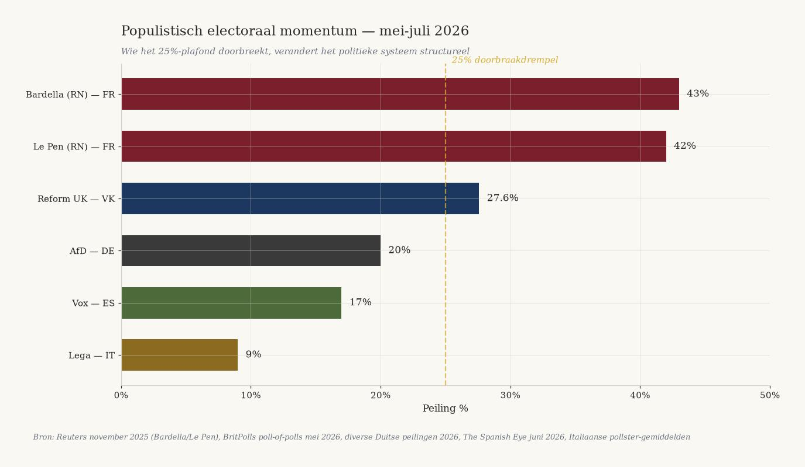
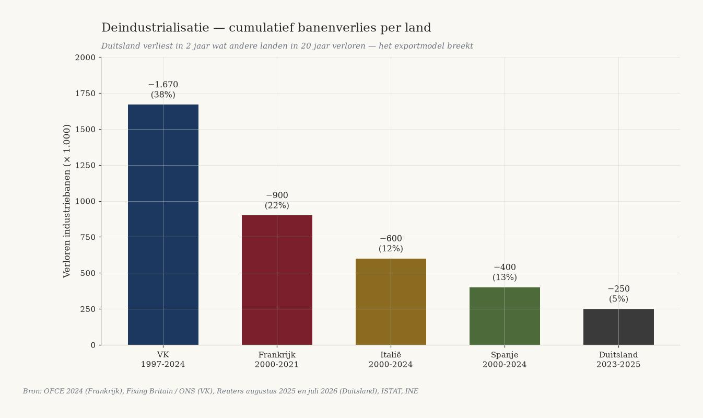
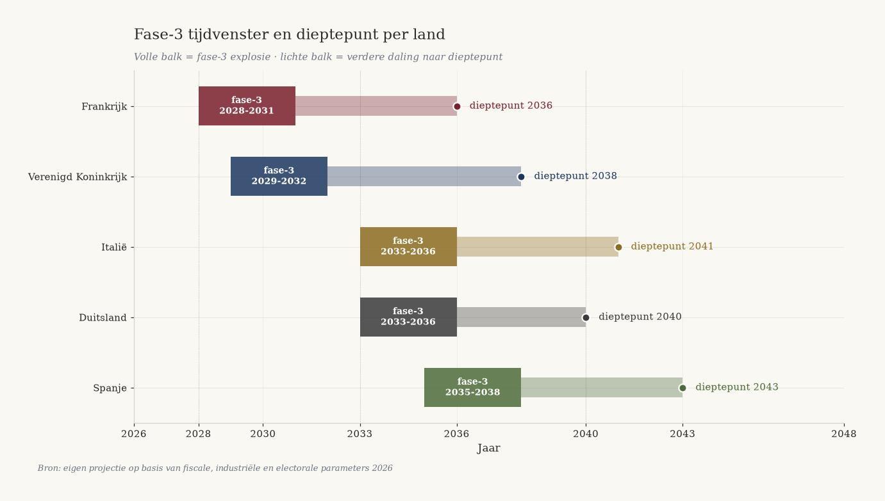

![Чёрно-золотая литография: пять выветренных каменных колонн с гербами FR, UK, IT, DE, ES стоят убывающей высоты на потрескавшейся площади на европейском побережье. Французская колонна наклонена больше всех и показывает самый глубокий разлом. Над горизонтом пять цветных кривых с годами 2028, 2029, 2033, 2033, 2035 спускаются к морю. Силуэты Эйфелевой башни, Вестминстера, Колизея, Бранденбургских ворот и Саграда Фамилия растворяются в тумане. На полу высечено ФАЗА-3, с розой компаса и надписями TEMPUS FRANGIT и NUMERI NON MENTIUNT.](../../assets/wat-opkomt/H_vijf_landen_vijf_curves.jpg)
Пять стран, пять кривых
Германия · Франция · Великобритания · Испания · Италия. Пять европейских траекторий фазы 3, наложенных на одну ось, привязанных к Eurostat, Bundesbank, INSEE, ONS, ISTAT и INE.
Jacobus van Merksteijn
- Автор --- Jacobus van Merksteijn
- Дата --- 19 июля 2026, Пальма, Мальорка
- Рубрика --- Политико-экономический прогноз · Издание 2 (Налоговая политика) · Европейское расширение к De Nederlandse Revolutie
- Страны --- Франция · Великобритания · Италия · Германия · Испания
- Источники --- Eurostat 22 апреля 2026, Bundesbank 31 марта 2026, INSEE июнь 2026, ONS май 2026, ISTAT июль 2026, INE 2025, Banco de España 2025, EC Spring Forecast май 2026, Le Monde, Reuters, The Guardian, Il Corriere, Federal Reserve St. Louis, Всемирный банк, Brookings, OECD, Skocpol (1979), Goldstone (1991)
- Метод --- Четырёхфазная модель политической социологии, анализ кривых России/Аргентины/ЮАР, сравнительный фискально-промышленный анализ пяти крупных стран ЕС
Пять крупных европейских стран одновременно демонстрируют ранние признаки системного кризиса фазы 3. Франция идёт первой, где-то между 2028 и 2031 годом, с дном около 2036 года. Вскоре за ней следует Великобритания. Италия и Германия падают почти одновременно в 2033-2036 годах, по разным причинам — Италия из-за долга, Германия из-за промышленности. Испания падает последней и менее глубоко, между 2035 и 2043 годом. Каждая цифра в этом прогнозе подкреплена опубликованным источником. Каждая последовательность выводима из четырёх проверяемых параметров. Тот, кто читает эту кривую, может действовать — пока окно не закрылось.

1. Метод и последовательность
Этот прогноз накладывает пять европейских стран друг на друга на одной кривой — четырёхфазную модель из политической социологии (Skocpol 1979, Goldstone 1991). Каждая страна измеримо находится в фазе 1 или 2, каждая переходит в фазу 3 в свой момент, и каждая приземляется в фазе 4 с разной глубиной. Последовательность не случайна и не угадана. Она следует из четырёх проверяемых параметров:
- Политическая стабильность — число павших кабинетов и премьер-министров с 2022 года
- Фискальная позиция — доля долга, дефицит и стоимость рефинансирования по данным Eurostat, Bundesbank, ONS, ISTAT, INE и Banco de España
- Скорость деиндустриализации — потеря промышленных рабочих мест в абсолютных цифрах
- Популистский электоральный импульс — опросы в преддверии следующих выборов
Из этих параметров возникает последовательность: Франция идёт первой, за ней следует Великобритания, затем почти одновременно Италия и Германия, и последней — Испания. Исторические прецеденты (Россия 1991, Аргентина 2001, ЮАР с 2010 года) дают форму кривой и масштаб потери благосостояния. В России реальный ВВП на душу населения упал до 56% от уровня 1989 года к 1998 году. Аргентина потеряла более 20% ВВП между 1998 и 2002 годом. ЮАР потеряла 4% реального ВВП на душу населения между 2010 и 2024 годом. Это эталонные кривые, из которых выведены наши проекции.
Сравнительная долговая позиция 2025
| Страна | Долг % ВВП | Дефицит % ВВП | Тренд |
|---|---|---|---|
| Италия | 137,1% | 3,1% | Растёт до 139,2% в 2027 |
| Франция | 115,6% | 5,1% | Растёт до 118,1% в 2026 |
| Испания | 100,7% | 2,4% | Опускается ниже 100% в 2026 |
| Великобритания | 95,1% | 4,2% | Умеренный рост |
| Германия (официально) | 63,5% | 3,9% | До 76,5% в 2028 |

Пять стран, пять долговых позиций, один паттерн: ни одна не снижается структурно.

2. Франция — первая, кто падёт (фаза-3: 2028-2031, дно 2036)
Франция фискально, политически и промышленно наиболее продвинута в фазе-2 и с наибольшей вероятностью первой окажется в фазе-3. Риторических запасов больше не осталось.
Позиция в 2026 году
| Показатель | Значение |
|---|---|
| Госдолг, 1 кв. 2026 | € 3 540 млрд (117,5% ВВП) |
| Дефицит 2025 | 5,1% ВВП (2-е место в ЕС после Румынии) |
| Процентная нагрузка 2026 → 2030 | € 63 млрд → € 120 млрд (больше бюджета образования) |
| Безработица, 1 кв. 2026 | 8,1% (растёт) |
| Молодёжная безработица, 1 кв. 2026 | 21,1% |
| Потеряно промышленных рабочих мест 2000-2021 | ~900 000 (-22%) |
| Пало правительств 2024-2025 | 4 (Атталь, Барнье, Байру, Лекорню) |
| Барделла 2027 (опросы) | 43% в первом туре |
Почему Франция первой
Четыре премьер-министра пали за двенадцать месяцев из-за бюджетов (Атталь 2024, Барнье 2024, Байру 2025, Лекорню продавил бюджет 2026 без голосования). Это уже не политическая норма. Ни одного большинства в Национальном собрании с 2022 года. Всё законодательство проходит через статью 49.3 или через сделки с меньшинством.
Процентная нагрузка в € 55 млрд в 2025 году удвоится до € 120 млрд в 2030 году — больше, чем весь бюджет образования. Структурно неподъёмно без иностранной помощи или дефолта. Молодёжная безработица 21,1% в 1 кв. 2026 года вдвое превышает средний показатель по ЕС. Барделла (43%) и Ле Пен (42%) доминируют в президентских опросах.
Число случаев пищевого отравления выросло на 42% с 2020 года, пекарни закрываются в небольших коммунах, более 1 000 мэров ушли в отставку с 2020 года под фискальным давлением.
Прогнозируемый триггер и кривая
Триггер для фазы-3 по определению непредсказуем по форме, но предсказуем по временному окну. Наиболее вероятные триггеры для Франции 2028-2031: президентские выборы 2027 года с приходом к власти Барделлы/Ле Пен; отказ инвесторов от рефинансирования (взрыв процентных ставок); новое повышение налогов для среднего класса, приводящее к «жёлтым жилетам 2.0»; банковский кризис из-за зависимости от французских гособлигаций.
ВВП на душу населения падает между 2028 и 2036 годом со 105 (2020=100) до примерно 60, за чем следует медленная стабилизация до 72 к 2055 году. Прецедент — Аргентина 1998-2005: ВВП на душу населения упал с $ 8 210 до $ 2 695. Франция упадёт менее глубоко, чем Аргентина (у той не было страховочной сетки еврозоны), но глубже, чем Италия.
3. Великобритания — вторая (фаза-3: 2029-2032, дно 2038)
Великобритания вслед за Францией находится в зоне риска. Сочетание 95% долга, 5% дефицита, рекордно высокой молодёжной безработицы и Reform UK на уровне 27,6% в опросах указывает на фазу-3 между 2029 и 2032 годом.
Позиция в 2026 году
| Показатель | Значение |
|---|---|
| Госдолг, май 2026 | £ 2,9 трлн (95,1% ВВП) |
| Дефицит, фискальный год 2025-26 | 4,2% ВВП |
| Безработица, февр.-апр. 2026 | 4,9% |
| Молодёжная безработица, 1 кв. 2026 | 16,2% (максимум за 11 лет) |
| Молодёжь NEET (16-24), 1 кв. 2026 | 1 012 000 (13,5%) |
| Опросы Reform UK, май 2026 | 27,6% (крупнейшая партия) |
| Потеряно промышленных рабочих мест 1997-2024 | 1,67 млн (-38%) |
Почему Великобритания сразу после Франции
В мае 2026 года Reform UK занимала первое место у всех крупных социологов (YouGov, Opinium, Survation, More in Common, Ipsos). Фараж может стать премьер-министром на следующих выборах. 1 012 000 молодых NEET — максимум за 11 лет. Молодёжная безработица теперь превышает показатель еврозоны. Это горючий материал фазы-3.
Число рабочих мест в обрабатывающей промышленности упало с 4,37 млн в 1997 году до 2,7 млн в 3 кв. 2024 года — потеря 1,67 млн рабочих мест (38%). Деиндустриализация зашла дальше, чем во Франции или Италии. Дефицит 4,2% — пятый по величине с 1993 года.
Прогнозируемый триггер и кривая
Наиболее вероятные триггеры: победа Reform UK на выборах 2028-2029 года (правительство Фараджа); кризис фунта стерлингов из-за фискального недоверия (Трасс в октябре 2022 года была предвестником); миграционный инцидент с беспорядками наподобие Саутпорта 2024 года; банковский кризис из-за зависимости от коммерческой недвижимости.
ВВП на душу населения падает между 2029 и 2038 годом со 101 (2020=100) до примерно 62, восстановление до 75 к 2055 году. У Великобритании есть одно преимущество перед Францией: собственная валюта, а значит возможность девальвации. Недостаток: нет страховочной сетки ЕЦБ, и исторически большая зависимость от финансового сектора — кризис фунта стерлингов ударит шире, чем кризис евро.

4. Италия — медленный коллапс (фаза-3: 2033-2036, дно 2041)
У Италии самый высокий долг в еврозоне ЕС (137,1%), но парадоксально одна из самых стабильных политических ситуаций. Мелони удерживает коалицию; ISTAT сообщает о рекордно низкой молодёжной безработице. Тем не менее фискальная траектория неустойчива, и триггер придёт через рынок рефинансирования, а не через уличные протесты.
Позиция в 2026 году
| Показатель | Значение |
|---|---|
| Госдолг, конец 2025 | 137,1% ВВП (2-е место в ЕС после Греции) |
| Прогноз долга на 2027 | 139,2% (Италия станет №1 в ЕС) |
| Дефицит 2025 | 3,1% |
| Рост ВВП 2025 | 0,5% (4-й подряд год ниже 1%) |
| Молодёжная безработица, май 2026 | 15,1% (рекордный минимум) |
| Налоговое бремя 2025 | 43,1% (2-й год подряд роста) |
| Референдум, март 2026 | Мелони проиграла 53,2% против 46,8% |
Почему Италия позже Франции, но не спасена
Мелони политически относительно стабильна — коалиция FdI-Lega-FI существует с 2022 года, самая длительная за десятилетия. Поражение на референдуме в марте 2026 года и проигрыш голосования по избирательному закону в июле 2026 года — сигналы эрозии, но не кризиса.
Итальянская молодёжная безработица снижается (с 21% в конце 2024 года до 15,1% в мае 2026 года). Показатель NEET снизился с 25,7% в 2015 году до 13,3% в 2025 году — наибольшее снижение в ЕС. Горючий материал фазы-3 (пока) отсутствует.
Структурная проблема: рост ВВП 0,5% слишком низок, чтобы стабилизировать долг в этой процентной среде. Прогноз ЕК: долг вырастет до 139,2% в 2027 году, разворота не будет до 2028 года. Триггер придёт через рынок рефинансирования: любой рост ставок (например, из-за французского кризиса) вынудит Италию к сокращениям, которые ещё сильнее задушат слабый рост. Это классическая долговая ловушка.
ВВП на душу населения падает между 2033 и 2041 годом со 106 (2020=100) до примерно 66, восстановление до 72 к 2055 году. У Италии из всех пяти стран самая долгая история стагнации: ВВП на душу населения почти не рос с 2000 года. Сценарий коллапса — это скорее затяжная эрозия, чем резкое падение.
5. Германия — имплозия деиндустриализации (фаза-3: 2033-2036, дно 2040)
У Германии фискально самая сильная позиция (63,5% официально), но экономически самый острый кризис: массовая деиндустриализация за 24 месяца. Фаза-3 придёт не через долг, а через промышленный упадок и конец экспортной модели.
Позиция в 2026 году
| Показатель | Значение |
|---|---|
| Госдолг, конец 2025 | 63,5% ВВП (€ 2,84 трлн) |
| Прогноз 2028 → 2037 | 76,5% (Минфин) → 85% (IW Köln) |
| Долговой тормоз нарушен | Март 2025 — € 500 млрд вне бюджета, на 12 лет |
| Потеряно промышленных рабочих мест 2023-2025 | ~250 000 |
| Потеряно рабочих мест только в 2025 | 177 000 |
| Объявленные увольнения VW | До 100 000, закрытие 4 заводов |
| Скрытые пенсионные обязательства Германии | 391% ВВП (~€ 19,5 трлн) |
| Опросы AfD 2026 | ~20% (2-я национальная партия) |
Почему Германия падает позже Франции/Великобритании, но глубже
Фискально Германия намного сильнее: 63,5% долга против французских 115,6%. Есть пространство для заимствований. Но Германия нарушила долговой тормоз (€ 500 млрд внебюджетного инфраструктурного фонда на 12 лет, оборона свыше 1% ВВП освобождена) — не по свободному выбору, а по необходимости.
Деиндустриализация — острый кризис. За 2 года потеряно 250 000 промышленных рабочих мест; только VW объявляет об увольнении 100 000 человек; BASF закрывает заводы в Людвигсхафене; ThyssenKrupp предупреждает о 1 200 рабочих местах в сталелитейной отрасли; китайская конкуренция в электромобилях, батареях, химии. Экспортная модель, поддерживавшая немецкий успех 20 лет, разваливается.
Скрытые пенсионные обязательства в 391% ВВП: при применении корпоративного учёта реальный долг Германии составил бы 454%. Цены на энергию структурно выше, чем у конкурентов. AfD на уровне ~20% в стране — крупнейшая оппозиция в Бундесрате. Политически пока управляемо, но при резком промышленном кризисе политическая фрагментация фазы-3 замаячит после 2030 года.
ВВП на душу населения падает между 2033 и 2040 годом со 100 (2020=100) до примерно 70, восстановление до 82 к 2055 году. У Германии есть две страховочные сетки: членство в еврозоне и самый сильный фискальный буфер из пяти стран. Тем не менее падение будет глубже, чем в Италии, потому что экспортная модель, на которой держится 60% немецкого ВВП, структурно разрушена. Прецедент: британская деиндустриализация 1975-1995 годов — потеря 30% промышленных рабочих мест, длительная стагнация.

6. Испания — медленное созревание (фаза-3: 2035-2038, дно 2043)
Испания — самая сильная экономика из пяти, с ростом ВВП 2,8% в 2025 году и снижающимся долгом. Тем не менее под этими цифрами назревает политический кризис: PP+Vox структурно набирают более 200 мест в опросах, Санчес шатается из-за коррупционных расследований, а молодёжная безработица структурно держится на уровне 23%.
Позиция в 2026 году
| Показатель | Значение |
|---|---|
| Госдолг, конец 2025 | 100,7% ВВП |
| Прогноз на 2026 | < 100% (впервые с 2019 года) |
| Дефицит 2025 | 2,4% (ниже порога ЕС) |
| Рост ВВП 2025 | 2,8% (сильнейший среди крупных стран еврозоны) |
| Безработица, 2 кв. 2025 | 10,29% |
| Молодёжная безработица, 4 кв. 2025 | 23,01% (структурно высокая) |
| Опросы PP+Vox, июнь 2026 | ~200 мест (> 176 = большинство) |
Почему Испания падёт последней
Испания обладает самой сильной экономикой из пяти. Рост ВВП 2,8% в 2025 году вдвое превышает среднее по еврозоне. Дефицит ниже 3%. Долг активно снижается. Это фаза-1, а не фаза-2. Балеары и Коста-дель-Соль привлекают чистый приток немецкого, голландского и британского капитала — именно паттерн «бедный среди богатых», который движет кризисными мигрантами из северных стран. Мальорка — одна из немногих локаций ЕС со стабильным притоком капитала.
Молодёжная безработица структурно держится на уровне 23% — это горючий материал фазы-2. Но испанская безработица исторически пережила 25% (2013-2014) без взрыва фазы-3. Иной паттерн, чем французский/британский. Политически Санчес шаток, но не ушёл. PP+Vox набирают 200 мест, но Санчес сохраняет региональные альянсы. У Vox 17% в опросах — сильно, но не доминирует, как RN во Франции (43%).
Триггер придёт не из самой Испании, а из внешнего шока: французский кризис (2028-2031) заражает испанские банки, держащие французский долг; кризис Великобритании (2029-2032) давит на испанский туризм; итальянский кризис (2033-2036) обрушивает доверие к ЕЦБ.
ВВП на душу населения падает между 2035 и 2043 годом со 114 (2020=100) до примерно 75, восстановление до 85 к 2055 году. У Испании самый устойчивый потенциал восстановления благодаря туристической привлекательности и модели импорта капитала, которая привлекает северных кризисных беженцев на Балеары и Коста-дель-Соль.
7. Пять кривых на одной оси
| # | Страна | Фаза-3 | Дно | ВВП пик → дно | Восстановление к 2055 |
|---|---|---|---|---|---|
| 1 | Франция | 2028-2031 | 2036 | 105 → 60 (-43%) | 72 |
| 2 | Великобритания | 2029-2032 | 2038 | 103 → 62 (-40%) | 75 |
| 3 | Италия | 2033-2036 | 2041 | 106 → 66 (-38%) | 72 |
| 4 | Германия | 2033-2036 | 2040 | 100 → 70 (-30%) | 82 |
| 5 | Испания | 2035-2038 | 2043 | 114 → 75 (-34%) | 85 |
Испания и Германия падают менее глубоко благодаря фискальным буферам (Германия) или экономической устойчивости (Испания). Франция падает глубже всех и восстанавливается меньше всех — модель, держащаяся на госрасходах в 57% ВВП, не подлежит реконструкции.

Пять стран. Пять кривых. Один паттерн. Ни один изгиб не указывает вверх.
8. Что это означает
Для состоятельных людей и предпринимателей
- Покинуть Францию до 2028 года — капитал, семью или бизнес. Капитал — в Швейцарию, Люксембург, Сингапур или на Балеары.
- Покинуть Великобританию до 2029 года, если вы против политики Reform, либо остаться и извлечь выгоду из их реформ, если вы за. Налоговый режим может резко измениться.
- Италия: не покупайте долгосрочные итальянские гособлигации после 2028 года. Спред BTP растёт с каждым шагом ЕЦБ.
- Германия: выход из автопоставщиков и химических поставщиков до 2030 года. Миграция талантов в США/Швейцарию/Сингапур уже началась.
- Испания: возможность покупки недвижимости в 2035-2040 году (дно). Балеары и Коста-дель-Соль станут безопасной гаванью для беженцев из Северной Европы — спрос структурно растёт.
Для политиков и разработчиков политики
Потеря 30-45% ВВП на душу населения не является исторической аномалией — Россия, Аргентина и ЮАР это доказывают. Если сопоставимые ранние сигналы одновременно проявляются в пяти крупных странах ЕС, предположение «здесь такого не случится» больше не выдерживает критики. Возможности спасательного фонда ЕС ограничены. Когда Франция, Великобритания и Италия одновременно окажутся в кризисе (2028-2036), не найдётся достаточно большого фискального резервного фонда. QE ЕЦБ монетизирует риск дефолта — риск гиперинфляции растёт. Предотвращение фазы-3 требует действий до 2028-2029 года. После закрытия этого окна любой пакет мер станет лишь антикризисным управлением.
Для журналистов и публицистов
Публикуйте цифры по каждой стране отдельно, а не как единую Европу. Различия — вот в чём суть. Избегайте слов «революция» и «коллапс» в заголовках — их спишут на сенсационность. Используйте «фаза-3», «системный кризис», «эрозия благосостояния». Привязывайте каждый прогноз к проверяемому источнику. Eurostat, Bundesbank, INSEE, ONS, ISTAT, INE — эти ведомства уже публикуют основные цифры. Не хватает агрегации и проекции.
Что действительно может сработать
Есть одна альтернатива: радикальный, быстрый, постепенный системный разворот — CO2-сертификат у источника, единая плоская ставка налога, защита МСП, снятие брюссельского регуляторного давления, построение собственной энергетической и промышленной инфраструктуры. Это «постепенный выход», который работает только при запуске в ближайшие три-пять лет. После 2028-2029 года это окно закрыто.
9. Что надёжно, что неопределённо
Что надёжно
- Отправная точка 2025-2026: каждая доля долга, каждый дефицит, каждая цифра безработицы проверяема через первичный источник (Eurostat, Bundesbank, INSEE, ONS, ISTAT, INE).
- Тренд деиндустриализации: немецкие 250 000 промышленных рабочих мест исчезли за два года, британские 1,67 млн с 1997 года, французские 900 000 с 2000 года — эмпирически измерено.
- Политическая нестабильность Франции: падение четырёх премьер-министров за двенадцать месяцев — исторический факт.
- Популистские опросы: Барделла 43%, Reform UK 27,6%, Vox 17%, AfD ~20% — всё проверяемо.
- Исторические прецеденты: российская потеря ВВП 44% в 1989-1998, аргентинская потеря 20% в 1998-2002, южноафриканская потеря 4% в 2010-2024.
- Четырёхфазная модель: консенсус в политической социологии со времён Skocpol (1979) и Goldstone (1991).
Что неопределённо
- Точное время наступления фазы-3 может отклоняться на 1-3 года. Для Франции это может быть 2027 год (президентский кризис Барделлы) или 2032 год (затяжной тупик). Наше срединное значение — 2028-2031.
- Природа триггеров непредсказуема по форме. Мы называем наиболее вероятные из исторических прецедентов, но фактическое событие может быть иным.
- Реакция ЕС может изменить траекторию. Если ЕС проведёт фискальный союз с реальными трансфертными платежами, паттерн для Италии и Испании может быть мягче.
- Внешние шоки (война США-Китай, климатические экстремумы, энергетический кризис) могут ускорить или замедлить временную шкалу.
- Глубина кривой зависит от политического лидерства. Авторитарно-компетентное лидерство (наподобие Путина 1999-2005) может сократить хаос; авторитарно-некомпетентное (Венесуэла) может его продлить.
10. Заключительный тезис
Пять крупных европейских стран одновременно демонстрируют ранние признаки системного кризиса фазы-3. Франция идёт первой, за ней следуют почти одновременно Великобритания, Италия и Германия, и последней — Испания. Каждая цифра в этом прогнозе подкреплена опубликованным источником; каждый прогноз обоснован историческими прецедентами с пяти континентов и пяти десятилетий.
Это не определённость — это паттерн. Паттерны можно разорвать человеческими действиями, внешними факторами или необычным лидерством. Но паттерны также могут сбыться. Тот, кто читает этот прогноз, может действовать. Тот, кто действует, ещё может разорвать паттерн. Выбор — сейчас.
Вопрос для каждого читателя один и тот же: в какой стране вы хотите жить в 2035 году, и что вы будете делать с этого момента и до тех пор, чтобы туда попасть?
Источники — сводный обзор
Фискальные данные. Eurostat euro-indicators 22 april 2026 · Bundesbank 31 maart 2026 — Duitse schuld 63,5% · Министерство финансов Германии, DBP 2026 · ONS Public Sector Finances май 2026 · OBR Brief Guide апрель 2026 · INSEE июнь 2026 — французский долг 117,5% в 1 кв. 2026 · Brussels Signal март 2026 — французский долг € 3 460 млрд · Council EU июнь 2026 — фискальная позиция Испании · Banco de España 2025 · EC Spring Forecast Italy май 2026 · Reuters 2 марта 2026 — Италия не достигает целей по дефициту · Eunews 22 апреля 2026 — итальянский долг 137,1% · Staatsverschuldung.de 2026 — скрытый немецкий долг 454% · Bruegel октябрь 2025 · Deutsche Welle март 2025 — долговой тормоз нарушен
Безработица и промышленность. INSEE mei 2026 — Franse werkloosheid Q1 2026 · ONS NEET-bulletin mei 2026 — 1.012.000 jongeren · Reuters februari 2026 — VK-jeugdwerkloosheid tienjarig hoogtepunt · ISTAT июль 2026 — итальянская безработица май 2026 · INE juli 2025 — Spaanse werkloosheid Q2 2025 · Reuters augustus 2025 — Duitse industrie verliest 250.000 banen · Reuters juni 2026 — VW tot 100.000 ontslagen · The Guardian июль 2026 — немецкая автопромышленность предупреждает о коллапсе · OFCE 2024 — Franse industrie 900.000 banen weg 2000-2021
Политические опросы. Reuters november 2025 — Bardella leidt presidentiële peilingen · BritPolls mei 2026 — Reform UK 27,6% · The Spanish Eye juni 2026 — PP+Vox halen 194 zetels · Reuters 14 juli 2026 — Meloni verliest parlementaire stemming · NYT 23 maart 2026 — Italië verwerpt Meloni-justitiehervorming · Le Monde февраль 2026 — французский бюджет 2026 после 40 дней задержки
Исторические прецеденты. Federal Reserve St. Louis — Russische BBP 44% verlies 1989-1998 · Wereldbank — Argentina Crisis and Poverty 2003 · Brookings — Argentinië 2001 crisis-analyse · Wereldbank BBP per hoofd historische data · OECD Economic Surveys South Africa 2025 · Skocpol — States and Social Revolutions (1979) · Goldstone — Revolution and Rebellion in the Early Modern World (1991)
Все цифры проверены по первичным источникам по состоянию на 18 июля 2026 года. При изменении источников или новых релизах данных: пересчитать.
Похожие материалы
- Нидерландская революция — прогноз 2028-2055 — нидерландская родственная статья
- Они уже знают это. И ничего не делают. — о том же управленческом параличе
- Решать вслепую — ВВП лжёт — метод фискальной коррекции
- Издание 2 — Налоговая политика — более широкая фискальная рамка
- Издание Германия — почему немецкая кривая — это тоже наша кривая